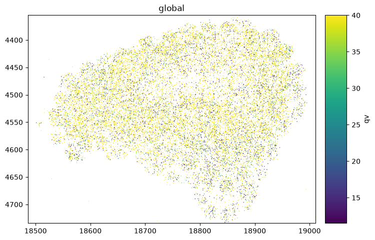
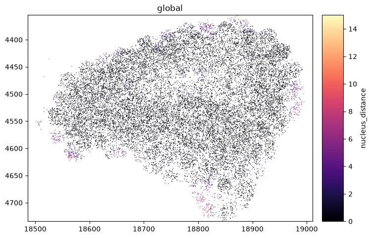
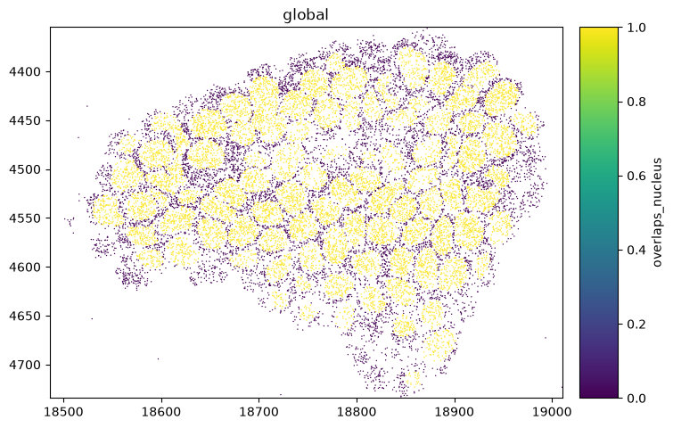
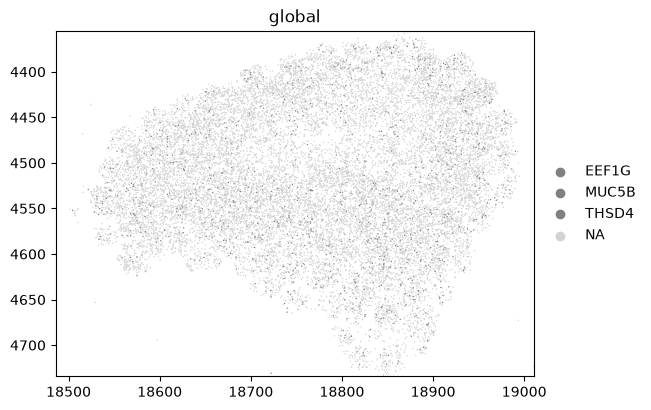
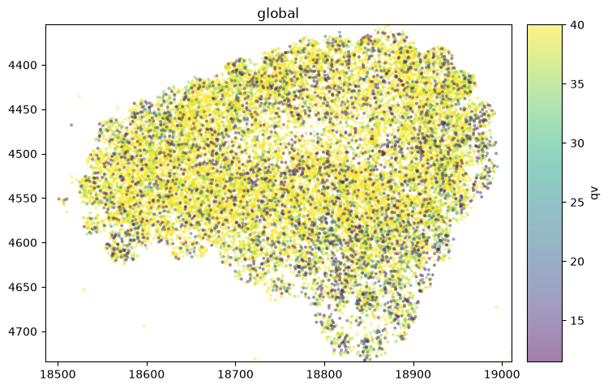

Colouring points in spatialdata-plot#
render_points colours a point element by any of its columns: a continuous column gets a colormap
and a colorbar, a categorical column gets a palette and a legend. This tutorial walks through the
point-colouring arguments. By the end you should be able to:
Colour by a continuous column and shape the mapping with
cmapandnorm.Colour by a categorical column, set the
palette, subset withgroups, and style the rest withna_color.Adjust
sizeandalpha, and know when to switch to the datashader backend.
We use the real Xenium cells dataset from squidpy (its transcripts element), downloaded and
cached on first use. Point colouring uses the matplotlib backend (method="matplotlib") so every
point keeps its own colour; render_points otherwise switches to datashader above ~10,000 points, which aggregates them and so
cannot keep a distinct colour per point — see the Point density maps and Speeding up rendering
notebooks.
Setup#
import squidpy as sq
import spatialdata_plot # noqa: F401 # registers the .pl accessor
sdata = sq.datasets.cells()
sdata
INFO Loading existing dataset from data/spatialdata/cells.zarr
SpatialData object, with associated Zarr store: /Users/tim.treis/Documents/GitHub/spatialdata-plot/docs/notebooks/examples/data/spatialdata/cells.zarr
├── Images
│ ├── 'he_aligned': DataTree[cyx] (3, 430, 540), (3, 215, 270)
│ ├── 'he_image': DataTree[cyx] (3, 423, 339), (3, 211, 169)
│ └── 'morphology_focus': DataTree[cyx] (4, 430, 540), (4, 215, 270)
├── Labels
│ ├── 'cell_labels': DataTree[yx] (430, 540), (215, 270)
│ ├── 'nucleus_labels': DataTree[yx] (430, 540), (215, 270)
│ └── 'tissue_labels': DataTree[yx] (430, 540), (215, 270)
├── Points
│ └── 'transcripts': DataFrame with shape: (<Delayed>, 13) (3D points)
├── Shapes
│ ├── 'cell_boundaries': GeoDataFrame shape: (94, 1) (2D shapes)
│ └── 'nucleus_boundaries': GeoDataFrame shape: (94, 2) (2D shapes)
└── Tables
└── 'table': AnnData (94, 5101)
with coordinate systems:
▸ 'global', with elements:
he_aligned (Images), he_image (Images), morphology_focus (Images), cell_labels (Labels), nucleus_labels (Labels), tissue_labels (Labels), transcripts (Points), cell_boundaries (Shapes), nucleus_boundaries (Shapes)
The cells dataset is a small (~3 MB) crop of a real 10x Xenium breast-cancer section,
cached locally after the first download. The colouring below draws on the columns of its
transcripts points element:
list(sdata["transcripts"].columns)
['x',
'y',
'z',
'feature_name',
'cell_id',
'fov_name',
'codeword_index',
'qv',
'transcript_id',
'is_gene',
'codeword_category',
'nucleus_distance',
'overlaps_nucleus']
1. A continuous column — colorbar#
Colouring by a continuous column draws a colorbar. Each transcript carries a Phred-scaled quality
qv; higher is better.
sdata.pl.render_points("transcripts", color="qv", method="matplotlib").pl.show()

2. Shaping the continuous mapping — cmap and norm#
Choose a colormap with cmap, and pin the contrast window with norm (see the Normalization and
contrast tutorial). Here we highlight transcripts within 15 px of a nucleus.
from matplotlib.colors import Normalize
sdata.pl.render_points(
"transcripts",
color="nucleus_distance",
cmap="magma",
norm=Normalize(0, 15),
method="matplotlib",
).pl.show()

3. A categorical column — legend and palette#
A categorical column draws a legend. overlaps_nucleus is a clean two-category flag; palette
assigns the colours.
sdata.pl.render_points(
"transcripts",
color="overlaps_nucleus",
palette=["lightgrey", "crimson"],
method="matplotlib",
).pl.show()
WARNING render_points: Ignoring categorical palette which is given for a continuous variable. Consider using
`cmap` to pass a ColorMap.

4. Subsetting categories — groups and na_color#
groups restricts colouring to selected categories; everything else is drawn in na_color. Here we
pick a few marker genes and grey out the rest. Omit na_color and the non-matching points are hidden
entirely instead of greyed.
sdata.pl.render_points(
"transcripts",
color="feature_name",
groups=["MUC5B", "EEF1G", "THSD4"],
na_color="lightgrey",
method="matplotlib",
).pl.show()

5. Marker size and opacity — size, alpha#
size scales the markers and alpha sets their opacity — lower both to reveal density where points
pile up.
sdata.pl.render_points(
"transcripts", color="qv", size=8, alpha=0.5, method="matplotlib"
).pl.show()

Summary#
A continuous
color=column draws a colorbar; shape it withcmapandnorm.A categorical
color=column draws a legend; set colours withpalette, subset withgroups, and style the remainder withna_color.sizeandalphatune the markers.Per-point colouring uses the matplotlib backend;
render_pointsauto-switches to datashader above 10,000 points (which drops per-point colour), so passmethod="matplotlib"to force it — or reach for datashader deliberately (method="datashader", ordensity=True) for millions of points. See the Point density maps and Speeding up rendering notebooks.
For reproducibility#
# ruff: noqa: F401, F811, I001, E402
# fmt: off
import warnings
import spatialdata_plot
%load_ext watermark
# fmt: on
%watermark -v -m -p spatialdata,spatialdata_plot,squidpy,matplotlib,numpy
Python implementation: CPython
Python version : 3.14.6
IPython version : 9.14.1
spatialdata : 0.7.3
spatialdata_plot: 0.4.1
squidpy : 1.8.2
matplotlib : 3.11.0
numpy : 2.4.6
Compiler : Clang 20.1.8
OS : Darwin
Release : 25.2.0
Machine : arm64
Processor : arm
CPU cores : 8
Architecture: 64bit